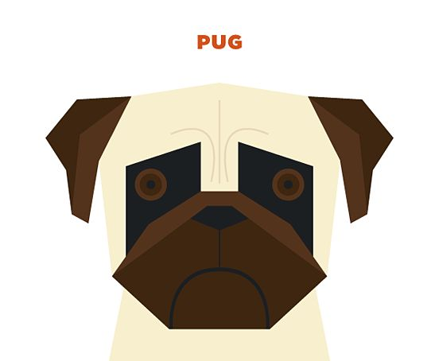

1. Javascript
- 사용자가 어떤 동작을 취했을 때, 그 동작에 대응하여 반응이 일어날 수 있도록 해줌.
- 동일문서안에서는 script 태그안에 작성하고, *.js 파일 형태로 만들어서 외부에서 가져올 수도 있음.
* 자바스크립트 맛보기
2. JQuery
- 자바스크립트를 쉽게 사용할수 있게 하는 라이브러리
- 자바스크립트로 만들어진 다양한 함수들이 있음
- jquery사이트에서 다운로드
- 선택자 -> .메소드1 -> .메소드2 -> .메소드3
- 객체 선택방법 :
- 직접선택 : $("#id") , $(".class"), $("tag"), $("*")
- 인접관계선택 : $("--").children, $("--").parent
- 탐색선택 : $("--").odd(), $("--").even(), $("--").first(), $("--").nth-child(3)
-
- 속성 조작 메소드 : $("-").html("-"), $("-").attr("속성","값"), $("-").css("스타일 속성","값"), $("-").val("값")
- 객체편집 메소드 : $("-").append("추가할내용")
- 애니메이션 메소드 : $("-").hide("효과 속도","콜백 함수"), $("-").show("효과 속도","콜백 함수"),
* JQuery 맛보기
- 리스트1
- 리스트2
- 리스트3 : 
- 리스트4 : Naver
Back